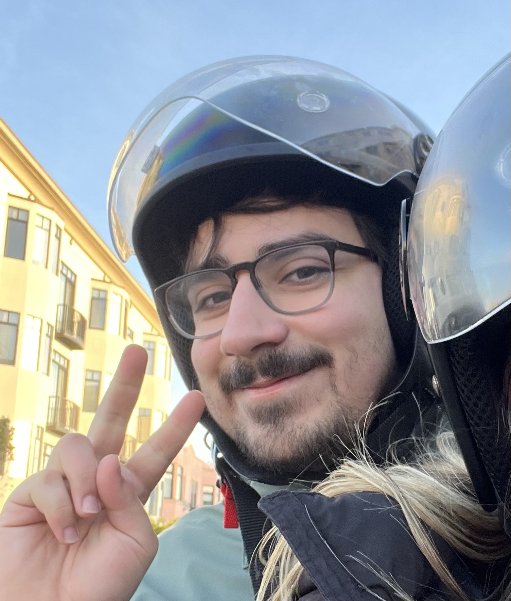
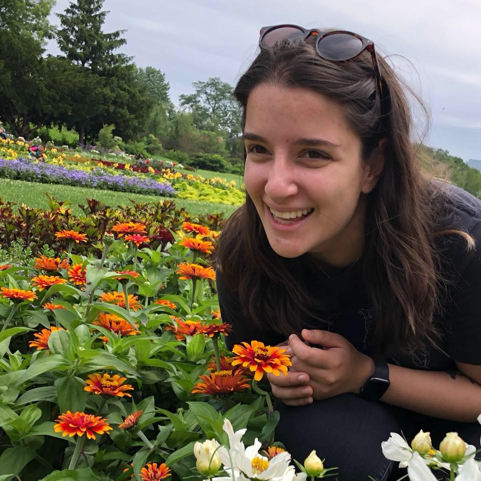

About Remote Roast
Do you work remotely? Trying to find good coffee shops to work at? You've come to the right place!
In the age of remote work, it can be easy to get stuck in your house. But when we decided to come together and work at local coffee shops, we had to search around for places with good wifi, comfortable work environments, and prices that wouldn't break the bank. We wanted to know which places were good for meetings. Where could we go for fun seasonal drinks when we wanted a little treat? If we were staying for a while, did they have good food? And most importantly, with all the caffeine we were putting in our bodies -- how many bathrooms did they have?
So, data nerds that we are, we decided to put all of our findings in one place so you don't have to scour Yelp reviews to see if the wifi is fast enough to load TikTok on your breaks from hard work.
Who are we?

After dropping out of bartending school, Osmar is now a computational neuroscience researcher at the University of Minnesota. His favorite espresso drink is an iced vanilla americano (light ice), and he's also a big fan of iced chai and london fog lattes. When not at a coffee shop, he can be found setting off fires in kitchens. Despite being incredibly chaotic in the kitchen, he does make mean shrimp stew.

After four years as a barista at a Minnesota coffee chain that shall not be named, Juliet is now a Data Analyst at the Star Tribune. Her favorite espresso drink is a hot americano with not too much water, but she also loves a plain old coffee or a fun flavored latte every once in a while. Juliet also plays in Twin Cities band Good Luck Alaska that recently released their debut EP.
Thank you for your support! Help us continue to rate coffee shops!